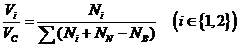
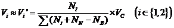
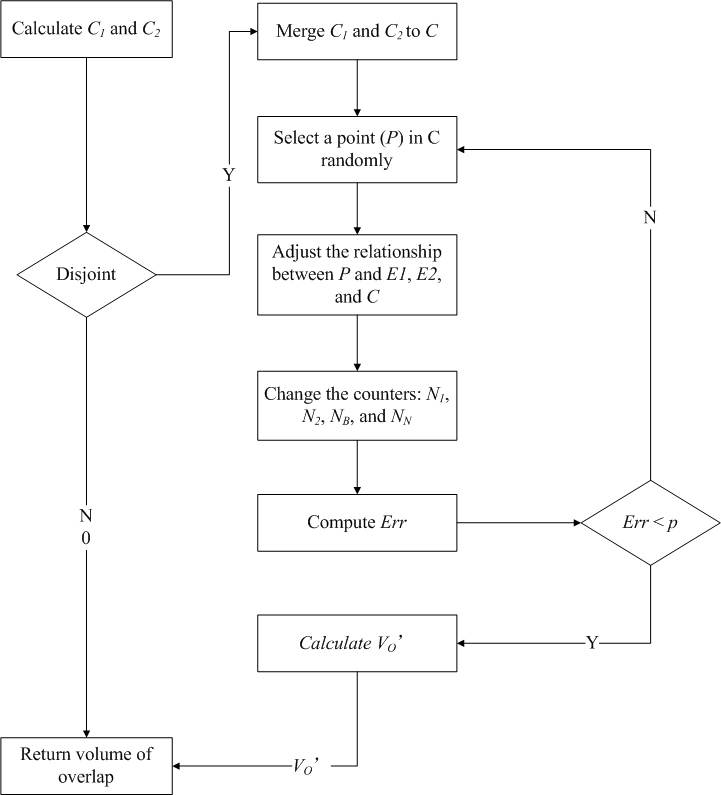
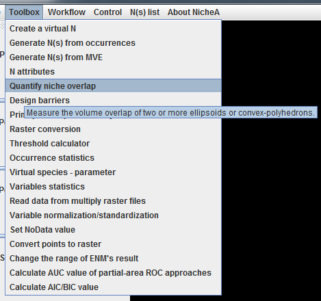
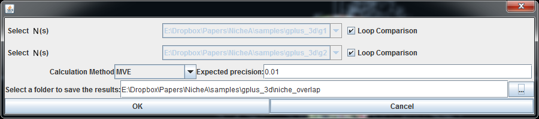
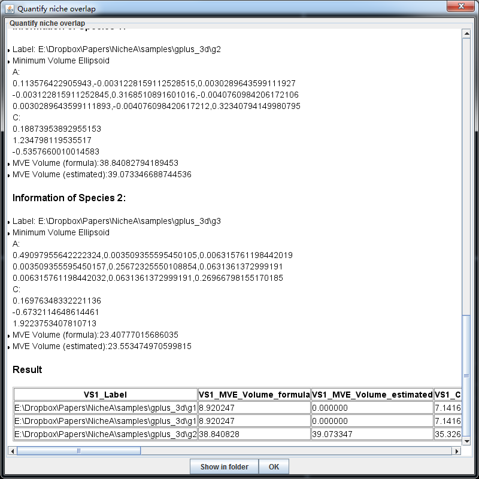

Quantifying niche similarity
One difference from ENMTools (Warren, Glor & Turelli 2010) and NichePy (Bentlage & Shcheglovitova 2012) is that NicheA measures niche similarity in E rather than in G, although differeNCes between the two will frequently be minor (see detailed discussion and analysis in Peterson et al. 2011). Niche similarity measurements in NicheA are based on overlap of niche ellipsoids or convex polyhedrons directly, an alternative coNCeptualization focused on full estimation of fundamental niches rather than on existing or realized niches that will be less representative and general (Peterson et al. 2011).
From the two formulas for E1 and E2, we can produce two minimum cuboids (C1 and C2) corresponding to each ellipsoid, with VOlumes V1 and V2. We first judged spatial relationships of these cuboids: when C1 is disjunct from C2, E1must be disjunct from E2, and the overlap (VO) of E1 and E2 is 0. However, when the cuboids intersect, we merge C1 and C2 to a larger cuboid (C) that contains both E1 and E2, and calculate the VOlume of C (VC). We then select large numbers of random points within C, and evaluate their positions as falling within E1 (N1), in E2 (N2), within both (NB), or in neither (NN). With infinite numbers of points, we could derive:
 ⑴However, as infinite numbers of points are not feasible, we can estimate Vi’ based on more limited samples with acceptable precision as:
 ⑵and calculate a maximum error (Err) between the real value and the estimated one as:
⑶If Err is less than a desired level of precision (p), we can obtain an estimated niche similarity via (4) based on Jaccard’s index. Fig. 1 shows these steps graphically.
⑷
The entrance of this function is under "Toolbox" menu (Fig.2). In the popup dialog, you need to select two Ns to calculate the niche overlap. If you check one "Loop Comparison", NicheA will compare all the Ns in the list with the selected N in the other list. In Fig.3, we check both of the "Loop Comparison" to quantify niche similarity of every N pair.
In "Calculation Method", you have two options, "MVE" and "CP", which stands for calculate the overlap by "MVE" or "CP" respectively. "Expected precision" is used to measure the accuracy of the results. A smaller precision means a higher accuracy. But it will take a longer time to get the results.
After the calculating process, a popup dialog shows the details of every N and the niche similarities in a table (Fig.4). By clicking "Show in folder" button, NicheA will open the result folder, so that you can reuse the result at any time you want.


